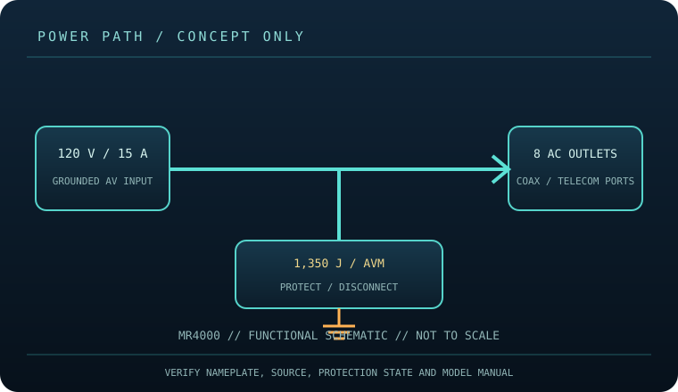

[ SURGE PROTECTIVE DEVICE // STATIC REFERENCE ]
Panamax MR4000 Power Management
Eight AC outlets, 1,350 J listed capacity, 120 V / 15 A; AVM and Protect-or-Disconnect power management. This record describes the named model only; verify nameplate, region, revision, approvals and current manufacturer instructions before deployment.

SAFETY SCOPE: Surge protective devices do not provide outage runtime, guarantee protection from every event, repair defective grounding, or replace qualified electrical installation. Capacity and topology below are based on the cited product literature; where a value is not published, it is not guessed.
Model specifications and topology
| Manufacturer / exact model | Panamax MR4000 — named North American model; revisions and region-specific suffixes must be checked on the actual label. |
|---|---|
| Class / topology | Point-of-use AV power manager with Automatic Voltage Monitoring (AVM) and Protect-or-Disconnect circuitry. Panamax describes disconnect behavior for severe voltage/surge conditions; it is not a UPS and has no stored runtime. |
| Electrical capacity | 120 V AC North American service, maximum 15 A; eight AC outlets and an 8 ft power cord per Panamax model information. Follow the rating printed on the exact unit. |
| Surge rating | Manufacturer-listed 1,350 J energy dissipation. This surge-energy figure is not continuous wattage and does not indicate remaining protection after a major event. Maximum AC load is limited by the unit and source circuit at 15 A. |
| Outlets / connection interface | Eight AC receptacles; Panamax documentation also describes coaxial and telecom/signal protection paths on the model. Connect only services matching port labels and preserve proper input/output orientation. Cord length: 8 ft. |
| Compatibility | For grounded 120 V equipment such as compatible AV components within the 15 A total input rating. AVM may interrupt output when voltage is outside the product’s permitted range. Signal protection requires correct service-specific cabling and cannot replace equipment-side bonding or grounding. |
| Battery / runtime | No battery or stored-energy runtime. This product cannot ride through an outage; connected loads lose power when the source or device disconnects. |
| Monitoring / lifecycle | Use only the model’s labeled indicators, alarm, breaker or status display. These features are not proof of building-ground integrity; check manufacturer replacement/failure instructions. |
| Installation / revision control | Read the full model-specific manual and nameplate before installation. Match voltage, phase, current, connector, signal-line type, enclosure rating, revision and approvals; similar product-family names are not evidence of interchangeability. |
Compatibility and application
For grounded 120 V equipment such as compatible AV components within the 15 A total input rating. AVM may interrupt output when voltage is outside the product’s permitted range. Signal protection requires correct service-specific cabling and cannot replace equipment-side bonding or grounding.
Point-of-use AV power manager with Automatic Voltage Monitoring (AVM) and Protect-or-Disconnect circuitry. Panamax describes disconnect behavior for severe voltage/surge conditions; it is not a UPS and has no stored runtime.
Confirm the equipment input-voltage range, connector type, circuit capacity and signal path from both equipment manuals. A higher joule number does not increase the permissible connected load and does not, by itself, define clamping behavior or protection lifetime.
Safety, inspection and limits
- Do not connect to a 240 V outlet, exceed the printed current rating, daisy-chain the unit, or use it to power loads not permitted by the manual. Keep signal-line connections correctly routed through matching ports. Unusual heat, odor, arcing, damaged cord, or repeated shutdown calls for immediate disconnection and inspection.
- Check the front-panel indicators and manual for fault/disconnect conditions; do not assume an illuminated display certifies upstream wiring or continuing surge capacity. Test AVM/disconnect behavior only as prescribed by Panamax, and never open the unit while connected to mains.
- Surge protection reduces specified transient exposure but cannot guarantee equipment survival from lightning, wiring faults, sustained overvoltage or every conducted path. Follow the model manual and applicable electrical code.
Manufacturer sources and safety references
- Panamax — MR4000 product specificationsManufacturer model page and current feature/rating information.
- Panamax — MR4000 owner’s manual (PDF)Model-specific installation, connection, operation and safety instructions.
- NFPA — NFPA 70 (National Electrical Code)Electrical installation and grounding requirements depend on the adopted local code.